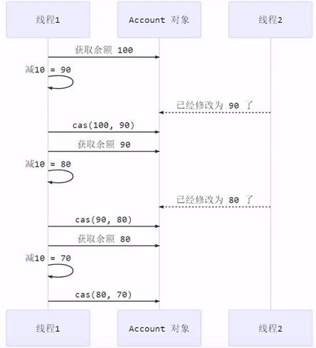
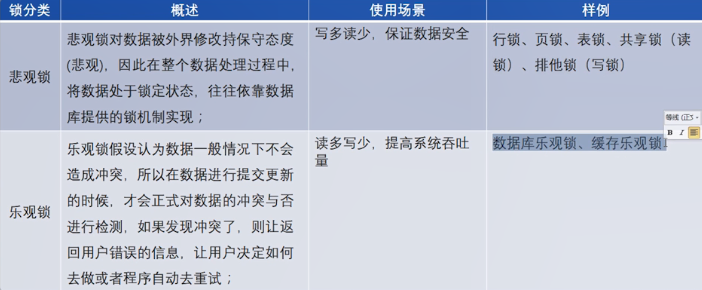

多线程编程
6共享模型之无锁
6.1CAS
引入
案例引入
1
2
3
4
5
6
7
8
9
10
11
12
13
14
15
16
17
18
19
20
21
22
23
24
25
26
27
28
29
30
31
32
33
34
35
36
37
38
39
40
41
42
43
44
45
46
47public class MultiThread {
public static void main(String[] args) {
Account account = new Account(10000);
ArrayList<Thread> threads = new ArrayList<>();
for (int i = 0; i < 1000; i++) {
threads.add(new Thread(()->{
account.withdraw(10);
}));
}
threads.forEach(Thread::start);
threads.forEach(t -> {
try {
t.join();
} catch (InterruptedException e) {
e.printStackTrace();
}
});
System.out.println(account.getMoney());
}
}
class Account{
private AtomicInteger money;
public Account(int money) {
this.money = new AtomicInteger(money); //⭐原子整数类
}
public Integer getMoney() {
return money.get();
}
public void withdraw(Integer amount) {
/*while(true) {
// 获取余额的最新值
int prev = balance.get();
// 要修改的余额
int next = prev - amount;
// 真正修改
if(balance.compareAndSet(prev, next)) {
break;
}
}*/
money.getAndAdd(-1 * amount);
}
}
CAS原理
前面看到的 AtomicInteger 的解决方法，内部并没有用锁来保护共享变量的线程安全。那么它是如何实现的呢？
1 | public void withdraw(Integer amount) { |
其中的关键是 compareAndSet，它的简称就是 CAS （也有 Compare And Swap 的说法），它必须是原子操作。

其实 CAS 的底层是 lock cmpxchg 指令（X86 架构），在单核 CPU 和多核 CPU 下都能够保证【比较-交换】的原子性。
在多核状态下，某个核执行到带 lock 的指令时，CPU 会让总线锁住，当这个核把此指令执行完毕，再开启总线。这个过程中不会被线程的调度机制所打断，保证了多个线程对内存操作的准确性，是原子的。
- volatile 可以用来修饰成员变量和静态成员变量，可以避免线程从自己的工作缓存中查找变量的值，必须到主存中获取它的值，线程操作 volatile 变量都是直接操作主存。即一个线程对 volatile 变量的修改，对另一个线程可见。
- CAS 底层必须借助 volatile 才能读取到共享变量的最新值来实现【比较并交换】的效果
CAS 的特点
- 结合 CAS 和 volatile 可以实现无锁并发，适用于线程数少、多核 CPU 的场景下。
- CAS 体现的是无锁并发、无阻塞并发
- 因为没有使用 synchronized，所以线程不会陷入阻塞，这是效率提升的因素之一
- 但如果竞争激烈，可以想到重试必然频繁发生，反而效率会受影响
乐观锁 & 悲观锁
- CAS 是基于乐观锁的思想：最乐观的估计，不怕别的线程来修改共享变量，就算改了也没关系，我吃亏点再 重试呗。
- synchronized 是基于悲观锁的思想：最悲观的估计，得防着其它线程来修改共享变量，我上了锁你们都别想 改，我改完了解开锁，你们才有机会。

6.2 原子操作类
原子整数
- J.U.C (java.util.concurrent) 中提供了原子操作类，可以提供线程安全的操作，例如: AtomicInteger.
AtomicBoolean，AtomicLong等，它们底层就是采用CAS技术+ volatile实现的。
1 | AtomicInteger i = new AtomicInteger(5); |
原子引用
- AtomicReference
- AtomicMarkableReference
- AtomicStampedReference
ABA 问题及解决
1 | static AtomicReference<String> ref = new AtomicReference<>("A"); |
主线程仅能判断出共享变量的值与最初值 A 是否相同，不能感知到这种从 A 改为 B 又 改回 A 的情况，如果主线程 希望：
只要有其它线程【动过了】共享变量，那么自己的 cas 就算失败，这时，仅比较值是不够的，需要再加一个版本号
AtomicStampedReference
1
2
3
4
5
6
7
8
9
10
11
12
13
14
15
16
17
18
19
20
21
22
23
24
25
26
27
28static AtomicStampedReference<String> ref = new AtomicStampedReference<>("A",0);
public static void main(String[] args) {
String pre = ref.getReference();
int stamp = ref.getStamp();
other();
Sleeper.sleep(1);
log.debug("change A->C {}", ref.compareAndSet(pre, "C",stamp,stamp+1));
}
private static void other() {
new Thread(() -> {
log.debug("change A->B {}", ref.compareAndSet(ref.getReference(), "B", ref.getStamp(), ref.getStamp() + 1));
log.debug("更新版本为 {}", ref.getStamp());
}, "t1").start();
Sleeper.sleep(0.5);
new Thread(() -> {
log.debug("change B->A {}", ref.compareAndSet(ref.getReference(), "A", ref.getStamp(), ref.getStamp() + 1));
log.debug("更新版本为 {}", ref.getStamp());
}, "t2").start();
}
/*
23:53:52.695 [t1] MultiThread - change A->B true
23:53:52.702 [t1] MultiThread - 更新版本为 1
23:53:53.148 [t2] MultiThread - change B->A true
23:53:53.148 [t2] MultiThread - 更新版本为 2
23:53:54.165 [main] MultiThread - change A->B false
*/
AtomicStampedReference 可以给原子引用加上版本号，追踪原子引用整个的变化过程，如： A -> B -> A -> C ，通过AtomicStampedReference，我们可以知道，引用变量中途被更改了几次。
但是有时候，并不关心引用变量更改了几次，只是单纯的关心是否更改过，所以就有了
AtomicMarkableReference
- 如果修改引用对象内容，而不是引用地址，则原子引用就会失效
原子数组
- AtomicIntegerArray
- AtomicLongArray
- AtomicReferenceArray
1 | public static void main(String[] args) { |
字段更新器
利用字段更新器，可以针对对象的某个域（Field）进行原子操作，只能配合 volatile 修饰的字段使用，否则会出现异常
AtomicReferenceFieldUpdater // 域字段
1
2
3
4
5
6
7
8
9
10
11
12
13
14
15
16public class Test40 {
public static void main(String[] args) {
Student stu = new Student();
AtomicReferenceFieldUpdater updater =
AtomicReferenceFieldUpdater.newUpdater(Student.class, String.class, "name");
System.out.println(updater.compareAndSet(stu, null, "张三"));//true
System.out.println(stu);//Student{name='张三'}
}
}
class Student {
volatile String name; //*****
}AtomicIntegerFieldUpdater //字段为整形
AtomicLongFieldUpdater //字段为长整形
原子累加器
对数字进行累加操作，比AtomicInteger的累加操作性能高很多
- LongAdder
- LongAccumulator
累加器性能比较
1
2
3
4
5
6
7
8
9
10
11
12
13
14
15
16
17
18
19
20
21
22
23
24
25
26
27
28
29
30
31
32
33
34
35
36
37
38
39
40
41
42
43
44
45
46
47
48
49public static void main(String[] args) {
for (int i = 0; i < 5; i++) {
demo(
() -> new AtomicLong(0),
AtomicLong::getAndIncrement
);
}
for (int i = 0; i < 5; i++) {
demo(
LongAdder::new,
LongAdder::increment
);
}
}
/*
() -> 结果 提供累加器对象
(参数) -> 执行累加操作
*/
private static <T> void demo(Supplier<T> adderSupplier, Consumer<T> action) {
T adder = adderSupplier.get();
List<Thread> ts = new ArrayList<>();
// 4 个线程，每个累加 50 万
for (int i = 0; i < 4; i++) {
ts.add(new Thread(() -> {
for (int j = 0; j < 500000; j++) {
action.accept(adder);
}
}));
}
long start = System.nanoTime();
ts.forEach(Thread::start);
ts.forEach(t -> {
try {
t.join();
} catch (InterruptedException e) {
e.printStackTrace();
}
});
long end = System.nanoTime();
System.out.println(adder + " cost:" + (end - start) / 1000_000);
}
/*
2000000 cost:29
2000000 cost:5
*///有很高的性能提升性能提升的原因很简单，就是在有竞争时，设置多个累加单元，Therad-0 累加 Cell[0]，而 Thread-1 累加 Cell[1]… 最后将结果汇总。这样它们在累加时操作的不同的 Cell 变量，因此减少了 CAS 重试失败，从而提高性能。
LongAdder原理见单独插页
UnSafe类
概述
- CAS底层依赖于 Unsafe 类来直接调用操作系统底层的CAS指令
- Unsafe 对象提供了非常底层的，操作内存、线程的方法【CAS park unpark AtomicInteger中incrementAndGet…】，Unsafe 对象不能直接调用，只能通过反射获得
- 是线程安全的，Unsafe字面为不建议使用的意思，过于底层
UnSafe CAS操作方法
1 | public class TestUnsafe { |
UnSafe 操作内存方法
- 不在本专题内
自定义原子整数类
1 | 4j(topic = "MultiThread") |
原文作者: 掘金木匠
原文链接: http://goldcarpenter.github.io/2019/08/12/多线程_Part7/
版权声明: 转载请注明出处(必须保留作者署名及链接)